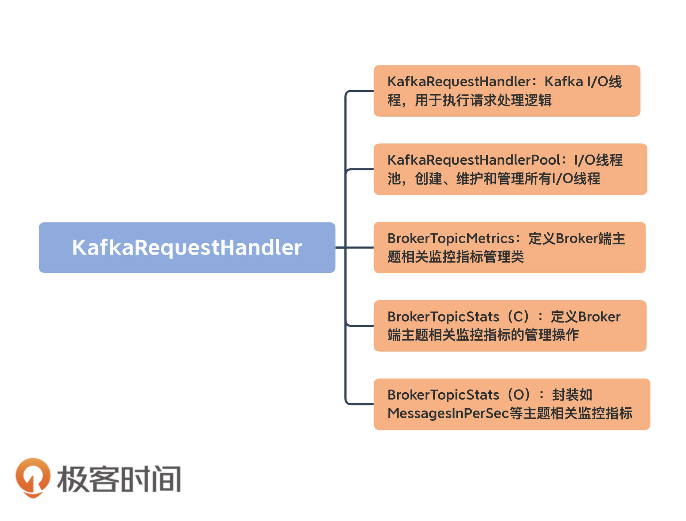
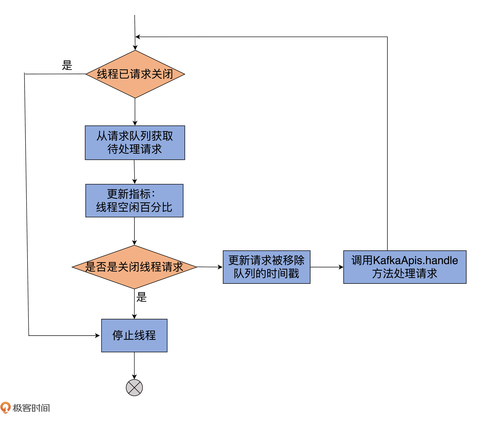

- 00 导读 构建Kafka工程和源码阅读环境、Scala语言热身.md.html
- 00 开篇词 阅读源码，逐渐成了职业进阶道路上的“必选项”.md.html
- 00 重磅加餐 带你快速入门Scala语言.md.html
- 01 日志段：保存消息文件的对象是怎么实现的？.md.html
- 02 日志（上）：日志究竟是如何加载日志段的？.md.html
- 03 日志（下）：彻底搞懂Log对象的常见操作.md.html
- 04 索引（上）：改进的二分查找算法在Kafka索引的应用.md.html
- 05 索引（下）：位移索引和时间戳索引的区别是什么？.md.html
- 06 请求通道：如何实现Kafka请求队列？.md.html
- 07 SocketServer（上）：Kafka到底是怎么应用NIO实现网络通信的？.md.html
- 08 SocketServer（中）：请求还要区分优先级？.md.html
- 09 SocketServer（下）：请求处理全流程源码分析.md.html
- 10 KafkaApis：Kafka最重要的源码入口，没有之一.md.html
- 11 Controller元数据：Controller都保存有哪些东西？有几种状态？.md.html
- 12 ControllerChannelManager：Controller如何管理请求发送？.md.html
- 13 ControllerEventManager：变身单线程后的Controller如何处理事件？.md.html
- 14 Controller选举是怎么实现的？.md.html
- 15 如何理解Controller在Kafka集群中的作用？.md.html
- 16 TopicDeletionManager： Topic是怎么被删除的？.md.html
- 17 ReplicaStateMachine：揭秘副本状态机实现原理.md.html
- 18 PartitionStateMachine：分区状态转换如何实现？.md.html
- 19 TimingWheel：探究Kafka定时器背后的高效时间轮算法.md.html
- 20 DelayedOperation：Broker是怎么延时处理请求的？.md.html
- 21 AbstractFetcherThread：拉取消息分几步？.md.html
- 22 ReplicaFetcherThread：Follower如何拉取Leader消息？.md.html
- 23 ReplicaManager（上）：必须要掌握的副本管理类定义和核心字段.md.html
- 24 ReplicaManager（中）：副本管理器是如何读写副本的？.md.html
- 25 ReplicaManager（下）：副本管理器是如何管理副本的？.md.html
- 26 MetadataCache：Broker是怎么异步更新元数据缓存的？.md.html
- 27 消费者组元数据（上）：消费者组都有哪些元数据？.md.html
- 28 消费者组元数据（下）：Kafka如何管理这些元数据？.md.html
- 29 GroupMetadataManager：组元数据管理器是个什么东西？.md.html
- 30 GroupMetadataManager：位移主题保存的只是位移吗？.md.html
- 31 GroupMetadataManager：查询位移时，不用读取位移主题？.md.html
- 32 GroupCoordinator：在Rebalance中，Coordinator如何处理成员入组？.md.html
- 33 GroupCoordinator：在Rebalance中，如何进行组同步？.md.html
- 特别放送（一）经典的Kafka学习资料有哪些？.md.html
- 特别放送（三）我是怎么度过日常一天的？.md.html
- 特别放送（二）一篇文章带你了解参与开源社区的全部流程.md.html
- 特别放送（五） Kafka 社区的重磅功能：移除 ZooKeeper 依赖.md.html
- 特别放送（四）20道经典的Kafka面试题详解.md.html
- 结束语 源码学习，我们才刚上路呢.md.html
- 捐赠
09 SocketServer（下）：请求处理全流程源码分析
你好，我是胡夕。前几节课，我们花了很多时间学习SocketServer核心组件的源代码，包括Acceptor线程、Processor线程，也研究了Data plane和Control plane针对不同类型请求的处理方案。
今天，我带你完整地梳理一下Kafka请求处理的全流程。这个全流程涉及到多个源码文件，为了弄懂其中的原理，我们必须在不同的方法间“跳来跳去”。比起学习单个源码文件，将多个文件中的方法组合在一起串成完整流程要难得多，因此，你最好多花一些时间，仔细研读一下跟这套流程相关的所有方法。
当然了，你可能有这样的疑问：“我为什么要关心请求被处理的流程呢？阅读这部分源码的意义是什么呢？”其实，弄明白这部分原理，非常有助于我们有针对性地调优Broker端请求处理的性能。
举个例子，Broker端有两个参数与这个流程相关，分别是num.network.threads和num.io.threads。如果我们不掌握请求被处理的流程，是没有办法有的放矢地调整这些参数的。
要知道，Kafka官网可没有告诉我们，什么是网络线程和I/O线程。如果不明白“请求是被网络线程接收并放入请求队列的”这件事，我们就很可能犯这样的错误——当请求队列快满了的时候，我们会以为是网络线程处理能力不够，进而盲目地增加num.network.threads值，但最终效果很可能是适得其反的。我相信，在今天的课程结束之后，你就会知道，碰到这种情况的时候，我们更应该增加的是num.io.threads的值。
num.io.threads参数表征的就是I/O线程池的大小。所谓的I/O线程池，即KafkaRequestHandlerPool，也称请求处理线程池。这节课我会先讲解KafkaRequestHandlerPool源码，再具体解析请求处理全流程的代码。
KafkaRequestHandlerPool
KafkaRequestHandlerPool是真正处理Kafka请求的地方。切记，Kafka中处理请求的类不是SocketServer，也不是RequestChannel，而是KafkaRequestHandlerPool。
它所在的文件是KafkaRequestHandler.scala，位于core包的src/main/scala/kafka/server下。这是一个不到400行的小文件，掌握起来并不难。
我先用一张图给你展示下这个文件里都有哪些组件：

- KafkaRequestHandler：请求处理线程类。每个请求处理线程实例，负责从SocketServer的RequestChannel的请求队列中获取请求对象，并进行处理。
- KafkaRequestHandlerPool：请求处理线程池，负责创建、维护、管理和销毁下辖的请求处理线程。
- BrokerTopicMetrics：Broker端与主题相关的监控指标的管理类。
- BrokerTopicStats（C）：定义Broker端与主题相关的监控指标的管理操作。
- BrokerTopicStats（O）：BrokerTopicStats的伴生对象类，定义Broker端与主题相关的监控指标，比如常见的MessagesInPerSec和MessagesOutPerSec等。
我们重点看前两个组件的代码。后面的三个类或对象都是与监控指标相关的，代码多为一些工具类方法或定义常量，非常容易理解。所以，我们不必在它们身上花费太多时间，要把主要精力放在KafkaRequestHandler及其相关管理类的学习上。
KafkaRequestHandler
首先，我们来看下它的定义：
// 关键字段说明
// id: I/O线程序号
// brokerId：所在Broker序号，即broker.id值
// totalHandlerThreads：I/O线程池大小
// requestChannel：请求处理通道
// apis：KafkaApis类，用于真正实现请求处理逻辑的类
class KafkaRequestHandler(
id: Int,
brokerId: Int,
val aggregateIdleMeter: Meter,
val totalHandlerThreads: AtomicInteger,
val requestChannel: RequestChannel,
apis: KafkaApis,
time: Time) extends Runnable with Logging {
......
}
从定义可知，KafkaRequestHandler是一个Runnable对象，因此，你可以把它当成是一个线程。每个KafkaRequestHandler实例，都有4个关键的属性。
- id：请求处理线程的序号，类似于Processor线程的ID序号，仅仅用于标识这是线程池中的第几个线程。
- brokerId：Broker序号，用于标识这是哪个Broker上的请求处理线程。
- requestChannel：SocketServer中的请求通道对象。KafkaRequestHandler对象为什么要定义这个字段呢？我们说过，它是负责处理请求的类，那请求保存在什么地方呢？实际上，请求恰恰是保存在RequestChannel中的请求队列中，因此，Kafka在构造KafkaRequestHandler实例时，必须关联SocketServer组件中的RequestChannel实例，也就是说，要让I/O线程能够找到请求被保存的地方。
- apis：这是一个KafkaApis类。如果说KafkaRequestHandler是真正处理请求的，那么，KafkaApis类就是真正执行请求处理逻辑的地方。在第10节课，我会具体讲解KafkaApis的代码。目前，你需要知道的是，它有个handle方法，用于执行请求处理逻辑。
既然KafkaRequestHandler是一个线程类，那么，除去常规的close、stop、initiateShutdown和awaitShutdown方法，最重要的当属run方法实现了，如下所示：
def run(): Unit = {
// 只要该线程尚未关闭，循环运行处理逻辑
while (!stopped) {
val startSelectTime = time.nanoseconds
// 从请求队列中获取下一个待处理的请求
val req = requestChannel.receiveRequest(300)
val endTime = time.nanoseconds
// 统计线程空闲时间
val idleTime = endTime - startSelectTime
// 更新线程空闲百分比指标
aggregateIdleMeter.mark(idleTime / totalHandlerThreads.get)
req match {
// 关闭线程请求
case RequestChannel.ShutdownRequest =>
debug(s"Kafka request handler $id on broker $brokerId received shut down command")
// 关闭线程
shutdownComplete.countDown()
return
// 普通请求
case request: RequestChannel.Request =>
try {
request.requestDequeueTimeNanos = endTime
trace(s"Kafka request handler $id on broker $brokerId handling request $request")
// 由KafkaApis.handle方法执行相应处理逻辑
apis.handle(request)
} catch {
// 如果出现严重错误，立即关闭线程
case e: FatalExitError =>
shutdownComplete.countDown()
Exit.exit(e.statusCode)
// 如果是普通异常，记录错误日志
case e: Throwable => error("Exception when handling request", e)
} finally {
// 释放请求对象占用的内存缓冲区资源
request.releaseBuffer()
}
case null => // 继续
}
}
shutdownComplete.countDown()
}
虽然我给一些主要的代码都标记了注释，但为了方便你更好地理解，我画一张图，借助它来展示下KafkaRequestHandler线程的处理逻辑：

我来解释下run方法的主要运行逻辑。它的所有执行逻辑都在while循环之下，因此，只要标志线程关闭状态的stopped为false，run方法将一直循环执行while下的语句。
那，第1步是从请求队列中获取下一个待处理的请求，同时更新一些相关的统计指标。如果本次循环没取到，那么本轮循环结束，进入到下一轮。如果是ShutdownRequest请求，则说明该Broker发起了关闭操作。
而Broker关闭时会调用KafkaRequestHandler的shutdown方法，进而调用initiateShutdown方法，以及RequestChannel的sendShutdownRequest方法，而后者就是将ShutdownRequest写入到请求队列。
一旦从请求队列中获取到ShutdownRequest，run方法代码会调用shutdownComplete的countDown方法，正式完成对KafkaRequestHandler线程的关闭操作。你看看KafkaRequestHandlerPool的shutdown方法代码，就能明白这是怎么回事了。
def shutdown(): Unit = synchronized {
info("shutting down")
for (handler <- runnables)
handler.initiateShutdown() // 调用initiateShutdown方法发起关闭
for (handler <- runnables)
// 调用awaitShutdown方法等待关闭完成
// run方法一旦调用countDown方法，这里将解除等待状态
handler.awaitShutdown()
info("shut down completely")
}
就像代码注释中写的那样，一旦run方法执行了countDown方法，程序流解除在awaitShutdown方法这里的等待，从而完成整个线程的关闭操作。
我们继续说回run方法。如果从请求队列中获取的是普通请求，那么，首先更新请求移出队列的时间戳，然后交由KafkaApis的handle方法执行实际的请求处理逻辑代码。待请求处理完成，并被释放缓冲区资源后，代码进入到下一轮循环，周而复始地执行以上所说的逻辑。
KafkaRequestHandlerPool
从上面的分析来看，KafkaRequestHandler逻辑大体上还是比较简单的。下面我们来看下KafkaRequestHandlerPool线程池的实现。它是管理I/O线程池的，实现逻辑也不复杂。它的shutdown方法前面我讲过了，这里我们重点学习下，它是如何创建这些线程的，以及创建它们的时机。
首先看它的定义：
// 关键字段说明
// brokerId：所属Broker的序号，即broker.id值
// requestChannel：SocketServer组件下的RequestChannel对象
// api：KafkaApis类，实际请求处理逻辑类
// numThreads：I/O线程池初始大小
class KafkaRequestHandlerPool(
val brokerId: Int,
val requestChannel: RequestChannel,
val apis: KafkaApis,
time: Time,
numThreads: Int,
requestHandlerAvgIdleMetricName: String,
logAndThreadNamePrefix : String)
extends Logging with KafkaMetricsGroup {
// I/O线程池大小
private val threadPoolSize: AtomicInteger = new AtomicInteger(numThreads)
// I/O线程池
val runnables = new mutable.ArrayBuffer[KafkaRequestHandler](numThreads)
......
}
KafkaRequestHandlerPool对象定义了7个属性，其中比较关键的有4个，我分别来解释下。
- brokerId：和KafkaRequestHandler中的一样，保存Broker的序号。
- requestChannel：SocketServer的请求处理通道，它下辖的请求队列为所有I/O线程所共享。requestChannel字段也是KafkaRequestHandler类的一个重要属性。
- apis：KafkaApis实例，执行实际的请求处理逻辑。它同时也是KafkaRequestHandler类的一个重要属性。
- numThreads：线程池中的初始线程数量。它是Broker端参数num.io.threads的值。目前，Kafka支持动态修改I/O线程池的大小，因此，这里的numThreads是初始线程数，调整后的I/O线程池的实际大小可以和numThreads不一致。
这里我再详细解释一下numThreads属性和实际线程池中线程数的关系。就像我刚刚说过的，I/O线程池的大小是可以修改的。如果你查看KafkaServer.scala中的startup方法，你会看到以下这两行代码：
// KafkaServer.scala
dataPlaneRequestHandlerPool = new KafkaRequestHandlerPool(config.brokerId, socketServer.dataPlaneRequestChannel, dataPlaneRequestProcessor, time, config.numIoThreads, s"${SocketServer.DataPlaneMetricPrefix}RequestHandlerAvgIdlePercent", SocketServer.DataPlaneThreadPrefix)
controlPlaneRequestHandlerPool = new KafkaRequestHandlerPool(config.brokerId, socketServer.controlPlaneRequestChannelOpt.get, controlPlaneRequestProcessor, time, 1, s"${SocketServer.ControlPlaneMetricPrefix}RequestHandlerAvgIdlePercent", SocketServer.ControlPlaneThreadPrefix)
由代码可知，Data plane所属的KafkaRequestHandlerPool线程池的初始数量，就是Broker端的参数nums.io.threads，即这里的config.numIoThreads值；而用于Control plane的线程池的数量，则硬编码为1。
因此，你可以发现，Broker端参数num.io.threads的值控制的是Broker启动时KafkaRequestHandler线程的数量。因此，当你想要在一开始就提升Broker端请求处理能力的时候，不妨试着增加这个参数值。
除了上面那4个属性，该类还定义了一个threadPoolSize变量。本质上，它就是用AtomicInteger包了一层numThreads罢了。
为什么要这么做呢？这是因为，目前Kafka支持动态调整KafkaRequestHandlerPool线程池的线程数量，但类定义中的numThreads一旦传入，就不可变更了，因此，需要单独创建一个支持更新操作的线程池数量的变量。至于为什么使用AtomicInteger，你应该可以想到，这是为了保证多线程访问的线程安全性。毕竟，这个线程池大小的属性可能被多个线程访问到，而AtomicInteger本身提供的原子操作，能够有效地确保这种并发访问，同时还能提供必要的内存可见性。
既然是管理I/O线程池的类，KafkaRequestHandlerPool中最重要的字段当属线程池字段runnables了。就代码而言，Kafka选择使用Scala的数组对象类实现I/O线程池。
createHandler方法
当线程池初始化时，Kafka使用下面这段代码批量创建线程，并将它们添加到线程池中：
for (i <- 0 until numThreads) {
createHandler(i) // 创建numThreads个I/O线程
}
// 创建序号为指定id的I/O线程对象，并启动该线程
def createHandler(id: Int): Unit = synchronized {
// 创建KafkaRequestHandler实例并加入到runnables中
runnables += new KafkaRequestHandler(id, brokerId, aggregateIdleMeter, threadPoolSize, requestChannel, apis, time)
// 启动KafkaRequestHandler线程
KafkaThread.daemon(logAndThreadNamePrefix + "-kafka-request-handler-" + id, runnables(id)).start()
}
我来解释下这段代码。源码使用for循环批量调用createHandler方法，创建多个I/O线程。createHandler方法的主体逻辑分为三步：
- 创建KafkaRequestHandler实例；
- 将创建的线程实例加入到线程池数组；
- 启动该线程。
resizeThreadPool方法
下面我们说说resizeThreadPool方法的代码。这个方法的目的是，把I/O线程池的线程数重设为指定的数值。代码如下：
def resizeThreadPool(newSize: Int): Unit = synchronized {
val currentSize = threadPoolSize.get
info(s"Resizing request handler thread pool size from $currentSize to $newSize")
if (newSize > currentSize) {
for (i <- currentSize until newSize) {
createHandler(i)
}
} else if (newSize < currentSize) {
for (i <- 1 to (currentSize - newSize)) {
runnables.remove(currentSize - i).stop()
}
}
threadPoolSize.set(newSize)
}
该方法首先获取当前线程数量。如果目标数量比当前数量大，就利用刚才说到的createHandler方法将线程数补齐到目标值newSize；否则的话，就将多余的线程从线程池中移除，并停止它们。最后，把标识线程数量的变量threadPoolSize的值调整为目标值newSize。
至此，KafkaRequestHandlerPool类的3个方法shutdown、createHandler和resizeThreadPool我们就学完了。总体而言，它就是负责管理I/O线程池的类。
全处理流程
有了上面的这些铺垫，我们就可以来学习下Kafka请求处理全流程的代码路径了。
我们再来看一下[第7讲]里的这张图。上一次，我主要是想借助它，让你对网络线程池有个整体的了解，今天，我来具体给你讲解下，这张图所展示的完整请求处理逻辑。

图中一共有6步。我分别解释一下，同时还会带你去找寻对应的源码。
第1步：Clients或其他Broker发送请求给Acceptor线程
我在第7节课讲过，Acceptor线程实时接收来自外部的发送请求。一旦接收到了之后，就会创建对应的Socket通道，就像下面这段代码所示：
// SocketServer.scala中Acceptor的run方法片段
// 读取底层通道上准备就绪I/O操作的数量
val ready = nioSelector.select(500)
// 如果存在准备就绪的I/O事件
if (ready > 0) {
// 获取对应的SelectionKey集合
val keys = nioSelector.selectedKeys()
val iter = keys.iterator()
// 遍历这些SelectionKey
while (iter.hasNext && isRunning) {
try {
val key = iter.next
iter.remove()
// 测试SelectionKey的底层通道是否能够接受新Socket连接
if (key.isAcceptable) {
// 接受此连接并分配对应的Processor线程
accept(key).foreach { socketChannel =>
var processor: Processor = null
do {
retriesLeft -= 1
processor = synchronized {
currentProcessorIndex = currentProcessorIndex % processors.length
processors(currentProcessorIndex)
}
currentProcessorIndex += 1
// 将新Socket连接加入到Processor线程待处理连接队列
// 等待Processor线程后续处理
} while (!assignNewConnection(socketChannel, processor, retriesLeft == 0))
}
} else {
......
}
......
}
可以看到，Acceptor线程通过调用accept方法，创建对应的SocketChannel，然后将该Channel实例传给assignNewConnection方法，等待Processor线程将该Socket连接请求，放入到它维护的待处理连接队列中。后续Processor线程的run方法会不断地从该队列中取出这些Socket连接请求，然后创建对应的Socket连接。
assignNewConnection方法的主要作用是，将这个新建的SocketChannel对象存入Processors线程的newConnections队列中。之后，Processor线程会不断轮询这个队列中的待处理Channel（可以参考第7讲的configureNewConnections方法），并向这些Channel注册基于Java NIO的Selector，用于真正的请求获取和响应发送I/O操作。
严格来说，Acceptor线程处理的这一步并非真正意义上的获取请求，仅仅是Acceptor线程为后续Processor线程获取请求铺路而已，也就是把需要用到的Socket通道创建出来，传给下面的Processor线程使用。
第2 & 3步：Processor线程处理请求，并放入请求队列
一旦Processor线程成功地向SocketChannel注册了Selector，Clients端或其他Broker端发送的请求就能通过该SocketChannel被获取到，具体的方法是Processor的processCompleteReceives：
// SocketServer.scala
private def processCompletedReceives(): Unit = {
// 从Selector中提取已接收到的所有请求数据
selector.completedReceives.asScala.foreach { receive =>
try {
// 打开与发送方对应的Socket Channel，如果不存在可用的Channel，抛出异常
openOrClosingChannel(receive.source) match {
case Some(channel) =>
......
val header = RequestHeader.parse(receive.payload)
if (header.apiKey == ApiKeys.SASL_HANDSHAKE && channel.maybeBeginServerReauthentication(receive, nowNanosSupplier))
……
else {
val nowNanos = time.nanoseconds()
if (channel.serverAuthenticationSessionExpired(nowNanos)) {
……
} else {
val connectionId = receive.source
val context = new RequestContext(header, connectionId, channel.socketAddress,
channel.principal, listenerName, securityProtocol,
channel.channelMetadataRegistry.clientInformation)
// 根据Channel中获取的Receive对象，构建Request对象
val req = new RequestChannel.Request(processor = id, context = context,
startTimeNanos = nowNanos, memoryPool, receive.payload, requestChannel.metrics)
……
// 将该请求放入请求队列
requestChannel.sendRequest(req)
......
}
}
……
}
} catch {
……
}
}
}
因为代码很多，我进行了精简，只保留了最关键的逻辑。该方法会将Selector获取到的所有Receive对象转换成对应的Request对象，然后将这些Request实例放置到请求队列中，就像上图中第2、3步展示的那样。
所谓的Processor线程处理请求，就是指它从底层I/O获取到发送数据，将其转换成Request对象实例，并最终添加到请求队列的过程。
第4步：I/O线程处理请求
所谓的I/O线程，就是我们开头提到的KafkaRequestHandler线程，它的处理逻辑就在KafkaRequestHandler类的run方法中：
// KafkaRequestHandler.scala
def run(): Unit = {
while (!stopped) {
......
// 从请求队列中获取Request实例
val req = requestChannel.receiveRequest(300)
......
req match {
case RequestChannel.ShutdownRequest =>
......
case request: RequestChannel.Request =>
try {
......
apis.handle(request)
} {
......
}
case null => // 什么也不做
}
}
......
}
KafkaRequestHandler线程循环地从请求队列中获取Request实例，然后交由KafkaApis的handle方法，执行真正的请求处理逻辑。
第5步：KafkaRequestHandler线程将Response放入Processor线程的Response队列
这一步的工作由KafkaApis类完成。当然，这依然是由KafkaRequestHandler线程来完成的。KafkaApis.scala中有个sendResponse方法，将Request的处理结果Response发送出去。本质上，它就是调用了RequestChannel的sendResponse方法，代码如下：
def sendResponse(response: RequestChannel.Response): Unit = {
......
// 找到这个Request当初是由哪个Processor线程处理的
val processor = processors.get(response.processor)
if (processor != null) {
// 将Response添加到该Processor线程的Response队列上
processor.enqueueResponse(response)
}
}
第6步：Processor线程发送Response给Request发送方
最后一步是，Processor线程取出Response队列中的Response，返还给Request发送方。具体代码位于Processor线程的processNewResponses方法中：
// SocketServer.scala
private def processNewResponses(): Unit = {
var currentResponse: RequestChannel.Response = null
while ({currentResponse = dequeueResponse(); currentResponse != null}) { // 循环获取Response队列中的Response
val channelId = currentResponse.request.context.connectionId
try {
currentResponse match {
case response: NoOpResponse => // 不需要发送Response
updateRequestMetrics(response)
trace(s"Socket server received empty response to send, registering for read: $response")
handleChannelMuteEvent(channelId, ChannelMuteEvent.RESPONSE_SENT)
tryUnmuteChannel(channelId)
case response: SendResponse => // 需要发送Response
sendResponse(response, response.responseSend)
......
}
}
......
}
}
从这段代码可知，最核心的部分是sendResponse方法来执行Response发送。该方法底层使用Selector实现真正的发送逻辑。至此，一个请求被完整处理的流程我就讲完了。
最后，我想再补充一点，还记得我之前说过，有些Response是需要有回调逻辑的吗？
实际上，在第6步执行完毕之后，Processor线程通常还会尝试执行Response中的回调逻辑，即Processor类的processCompletedSends方法。不过，并非所有Request或Response都指定了回调逻辑。事实上，只有很少的Response携带了回调逻辑。比如说，FETCH请求在发送Response之后，就要求更新下Broker端与消息格式转换操作相关的统计指标。
总结
今天，我们学习了KafkaRequestHandlerPool线程池及其下辖的KafkaRequestHandler线程，该线程就是Kafka社区所称的I/O线程。另外，我结合源代码把Kafka的请求处理流程串讲了一遍。我们来回顾下这节课的重点。
- KafkaRequestHandler：I/O线程，负责处理Processor线程下发的Request对象。
- KafkaRequestHandlerPool：创建和管理一组KafkaRequestHandler线程。
- 请求处理流程：总共分为6步。
- Clients或其他Broker通过Selector机制发起创建连接请求。
- Processor线程接收请求，并将其转换成可处理的Request对象。
- Processor线程将Request对象放入Request队列。
- KafkaRequestHandler线程从Request队列中取出待处理请求，并进行处理。
- KafkaRequestHandler线程将Response放回到对应Processor线程的Response队列。
- Processor线程发送Response给Request发送方。

其实，今天在谈到Request逻辑执行的时候，我卖了个关子——我提到，KafkaApis是请求逻辑的真正处理方法。也就是说，所有类型的请求处理逻辑都封装在KafkaApis文件下，但我并没有深入地去讲它。下节课，我会重点和你聊聊这个KafkaApis类。我一直认为，该类是查看所有Kafka源码的首要入口类，绝对值得我们花一整节课的时间去学习。
课后讨论
最后，请你结合今天的内容思考一个问题：你觉得，请求处理流程的哪些部分应用了经典的“生产者-消费者”模式？
欢迎你在留言区畅所欲言，跟我交流讨论，也欢迎你把今天的内容分享给你的朋友。
© 2019 - 2023 Liangliang Lee. Powered by gin and hexo-theme-book.